기능이 잘 돌아가면 재미있을까요?
출발점은 한 줄짜리 요청이에요. "간단하게 오목을 재미있게 만들어봐." 이렇게 부탁하면 AI는 장애물, 위험 표시, 힌트, 흑백 교환까지 다 넣은 오목을 들고 와요. 아래 화면 왼쪽이 기본 오목, 오른쪽이 AI가 기능을 다 넣은 오목이에요. 오른쪽에는 기능 목록과 힌트 버튼, 판 위의 장애물이 보여요.
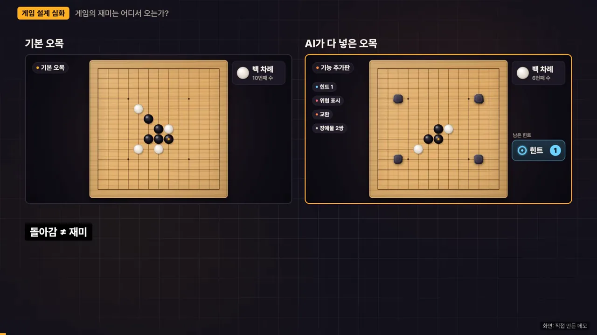
힌트 하나만 봐도 답이 갈려요. 누군가에겐 처음으로 상대의 공격을 읽게 해 주는 선생님이고, 누군가에겐 내가 찾을 답을 먼저 말해 버리는 옆자리 훈수꾼이에요. 그래서 발표자는 같은 요청을 AI에게 1,000번 보내 봤어요. 다만 1,000명이 해 보고 재미있다고 한 실험은 아니에요.
영상은 네 가지를 나란히 놓고 봐요. 표의 가운데 열이 한 판의 길이, 오른쪽 열이 플레이어가 바꿀 수 있는 것이에요. 가위바위보는 몇 초 동안 손 하나를, MMORPG(Massively Multiplayer Online Role-Playing Game)는 몇 달 동안 성장과 관계를 바꿔요.
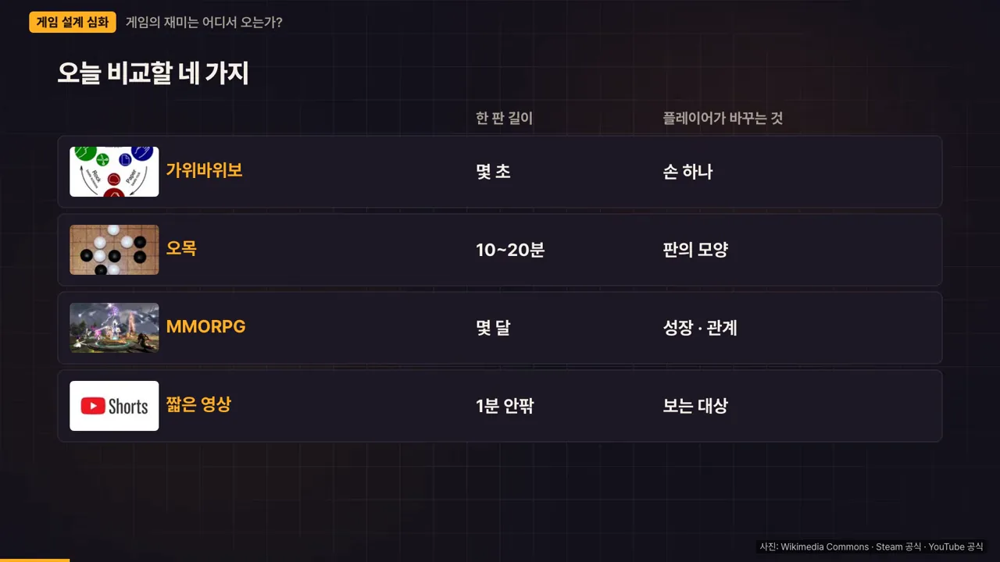
규칙보다 상대가 중요해요
가위바위보에는 공격력도 장비도 없어요. 그런데 마지막 치킨 한 조각이 걸리면 손이 떨려요. 규칙이 아니라 상대가 있어서예요. 상대가 완전히 무작위로 낸다면 지난 판을 아무리 봐도 소용없어요. 사람은 달라요. 방금 이긴 손을 또 내거나, 지고 나면 손을 바꾸는 버릇이 있을 수 있어요.
왕(Wang) 연구팀은 대학생 360명에게 가위바위보를 300판씩 시키고 기록을 분석했어요. 아래 그래프에서 W는 이긴 뒤, T는 비긴 뒤, L은 진 뒤 다음 판이에요. 가운데 첨자 0 막대가 같은 손을 다시 낸 비율인데, W₀ 막대가 0.5를 훌쩍 넘어요. 빨간 상자로 묶은 L 세 막대는 높이가 거의 같아요.
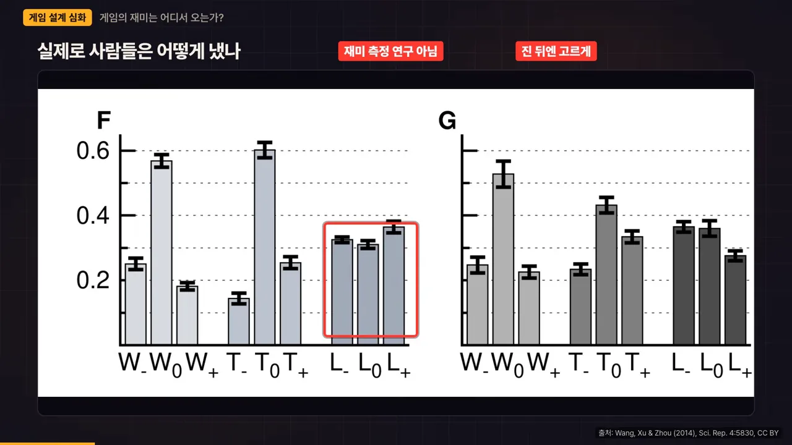
그럼 가위바위보를 더 재미있게 하려면 뭘 바꿔야 할까요? 아래 표의 두 번째 줄처럼 기술을 10개 넣으면 플레이어가 하는 일은 입력 외우기가 되고, 남는 느낌은 부담이에요. 거의 단축키 시험이죠. 세 번째 줄처럼 상대가 지난 판에 낸 손을 보여 주면 버릇을 읽게 되고, 원래 재미인 수 싸움이 더 또렷해질 수 있어요.
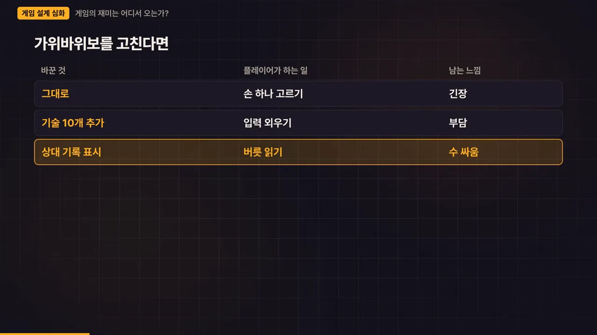
기능, 플레이, 경험 — MDA와 동기 이론
게임 디자이너들이 많이 쓰는 틀로 MDA(Mechanics, Dynamics, Aesthetics)가 있어요. 규칙과 구현은 메카닉스, 플레이 중에 실제로 벌어지는 일은 다이내믹스, 플레이어가 느끼는 건 에스테틱스라고 불러요. 아래 그림에서 왼쪽 Designer는 M에서 출발해 오른쪽으로, 오른쪽 Player는 A에서 출발해 왼쪽으로 화살표가 가요. 만드는 사람은 규칙에서, 하는 사람은 느낌에서 출발한다는 뜻이에요.
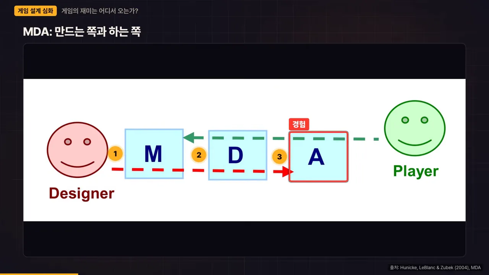
오목으로 옮기면 이래요. 판에 장애물이 있다는 건 규칙이에요. 그 장애물 때문에 곧게 못 뻗고 옆으로 돌아간다면 플레이에서 생긴 일이에요. 그렇게 돌아간 수가 통했을 때 '상대를 읽었다' 싶은 그 기분이 경험이에요. 영상의 오목판에는 X 표시된 장애물 옆으로 돌을 돌려 놓은 수와 '경험: 읽었다' 표시, 왼쪽 위 '만드는 것: 1층' 표시가 함께 보여요.
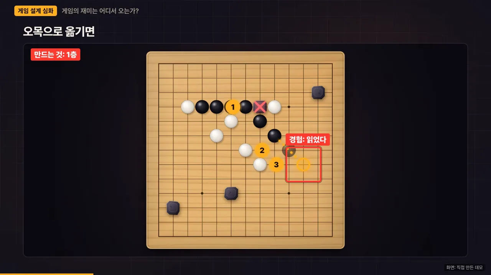
세 층을 오목 예로 한 줄에 놓으면 아래와 같아요. 첫 칸만 코드로 만들 수 있고, 가운데 칸이 정말 이어지는지는 직접 해 봐야 알아요.
기능을 넣기 전에 쓰는 한 줄
그래서 발표자는 기능을 넣기 전에 한 줄을 먼저 써요. "이 규칙 때문에 플레이어가 뭘 다르게 하고, 그래서 뭘 느낄까." 아래 표가 그 한 줄을 모은 거예요. 장애물 2쌍은 돌아서 공격하게 하고 상대를 읽은 느낌을, 힌트 1회는 막힐 때 요청하게 하고 '이해했다'는 느낌을, 작은 판은 빨리 부딪히게 하고 긴장을 줘요. 마지막 줄 위협 표시는 두 칸이 다 물음표예요.
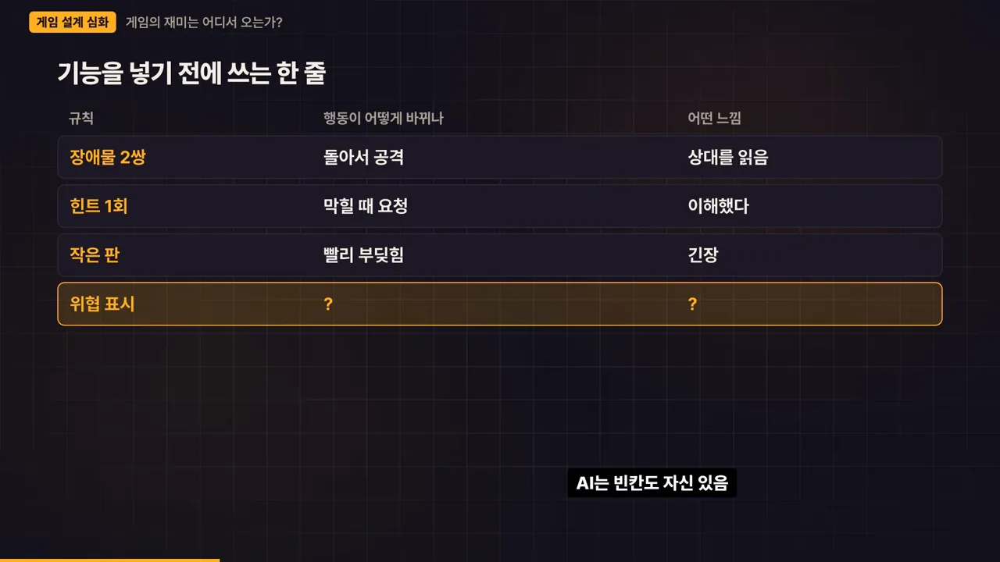
재미는 도전 하나가 아니에요
MDA 논문이 꼽는 재미는 여덟 가지예요. 감각, 판타지, 이야기, 도전, 친교, 발견, 표현, 시간 때우기예요. 화면에서 빨간 상자가 둘러싼 건 4번 Challenge(도전) 하나뿐이에요. 어려운 문제만 게임 설계의 재료가 아니라는 뜻이에요. 친구와 수다 떨며 하는 게임도, 방 꾸미는 게임도 다 설계할 수 있는 경험이에요.
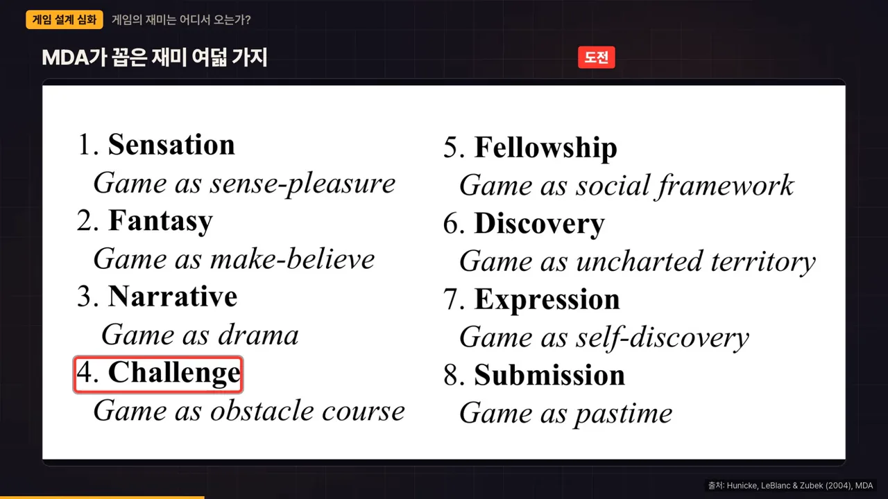
내가 골랐고, 통했고, 이어졌다
라이언(Ryan) 연구팀은 자기결정성이론이라는 동기 이론을 게임에 가져왔어요. 여기서 보는 건 셋이에요. 내가 골랐다는 느낌인 자율성, 내 행동이 통한다는 느낌인 유능감, 다른 사람과 이어진 느낌인 관계성이에요. 연구는 이런 느낌들이 게임의 즐거움과 함께 움직인다는 관련성을 보고했어요.
다만 자율성은 버튼 개수가 아니에요. 선택지가 100개여도 정답이 하나뿐이면 고른다는 느낌은 잘 안 들어요. 유능감도 무조건 이기는 게 아니에요. 방금까지 몰랐던 이유를 이제 알겠다는 순간이 더 클 수 있어요.
그래서 "힌트를 넣으면 초보자에게 좋다"는 가설은 그럴듯해요. 아래 화면 왼쪽은 요청할 때만 1회 쓸 수 있는 힌트, 오른쪽은 정답 자리를 늘 표시하는 판이에요. 왼쪽 아래에는 '내가 고름'이라고 적혀 있어요.
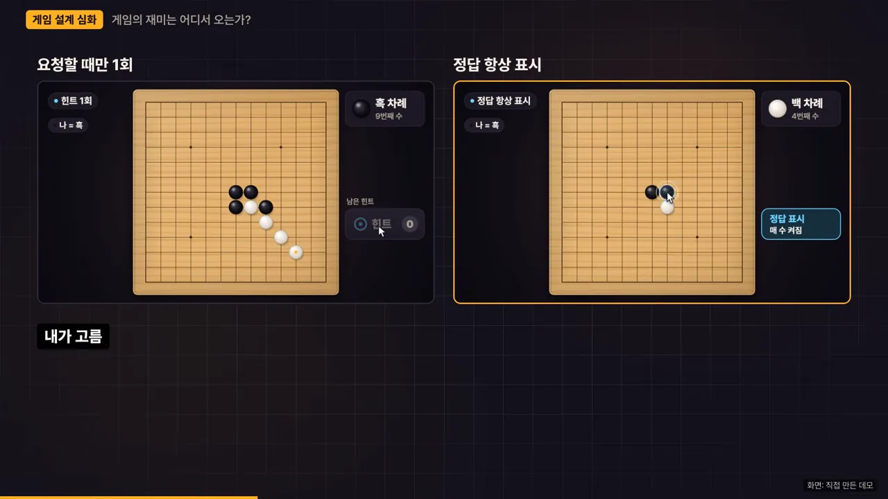
개념을 기능에 붙였다고 검증이 끝나는 게 아니에요. 더 구체적인 질문이 하나 생긴 거예요. 이 질문은 다섯 번째 섹션의 힌트 실험 계획으로 이어져요.
MMORPG가 알려 주는 시간축
이번엔 덩치가 아주 큰 게임, MMORPG예요. 겉으로는 가위바위보와 하나도 안 닮았지만 가까이 보면 짧은 판단과 긴 결과가 겹겹이 쌓여 있어요. 아래 화면의 타임라인 네 칸이 그 겹이에요. 순간(1초)에는 공격할지 피할지를, 세션(1시간)에는 이번 공략에서 누가 어떤 역할을 맡을지를 정해요. 성장(몇 주)은 다음 주에 쓸 장비를 모으는 계획이고, 관계(몇 달)는 누구와 다시 만날지예요.
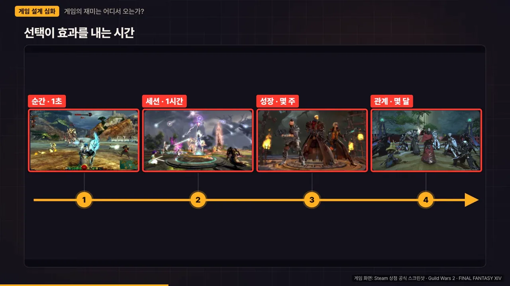
같은 레이드, 다른 이유
닉 이(Nick Yee)의 온라인 게임 동기 연구는 사람들이 게임을 하는 이유를 세 갈래로 묶었어요. 아래 표 첫 줄 성취는 성장·분석·경쟁, 즉 숫자를 키우고 최적화하는 쪽이에요. 둘째 줄 사회는 대화·관계·협동, 셋째 줄 몰입은 발견·역할극·꾸미기·도피예요. 같은 레이드에 있어도 한 명은 딜 미터기를 보러, 한 명은 길드원 얼굴을 보러 와요.
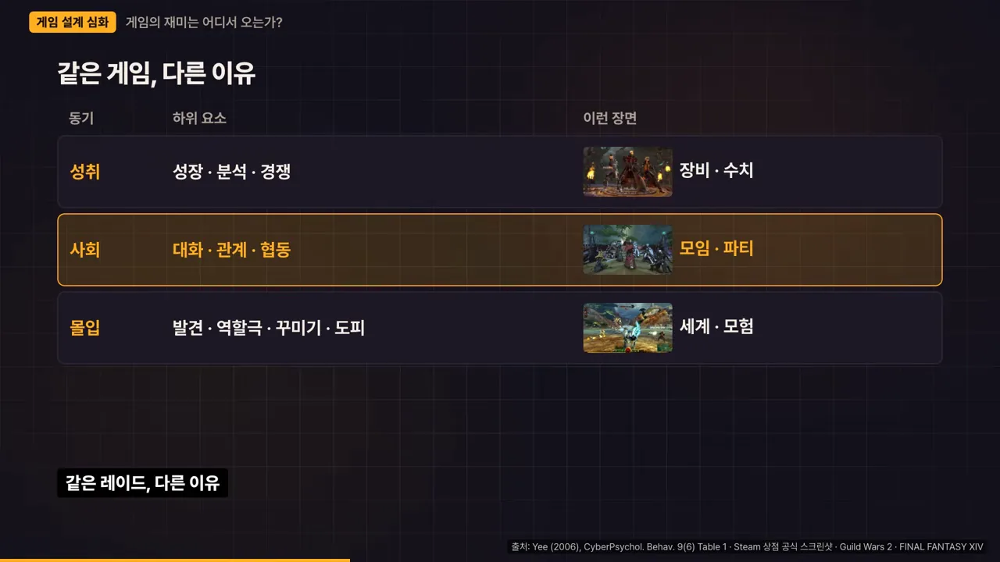
발표자는 바로 선을 그어요. 이 연구는 2006년 특정 게임 이용자 약 3,000명에게 받은 설문이에요. 요즘 모든 게이머를 세 부류로 나눴다는 뜻이 아니니, 게이머 혈액형처럼 쓰면 곤란해요. 가져올 건 사람을 칸에 넣는 표보다 '같은 기능이 서로 다른 이유로 쓰인다'는 관점이에요.
작은 게임에도 시간축이 있어요
그럼 작은 게임을 만드는 사람이 MMORPG에서 가져올 건 거대한 콘텐츠 양일까요? 발표자는 시간축이 먼저라고 봐요. 아래 화면의 오목판 세 장이 그 시간축이에요. 1번은 한 수, 2번은 한 판, 빨간 상자의 3번이 이번 판에서 배운 걸 써먹는 다음 판이에요.
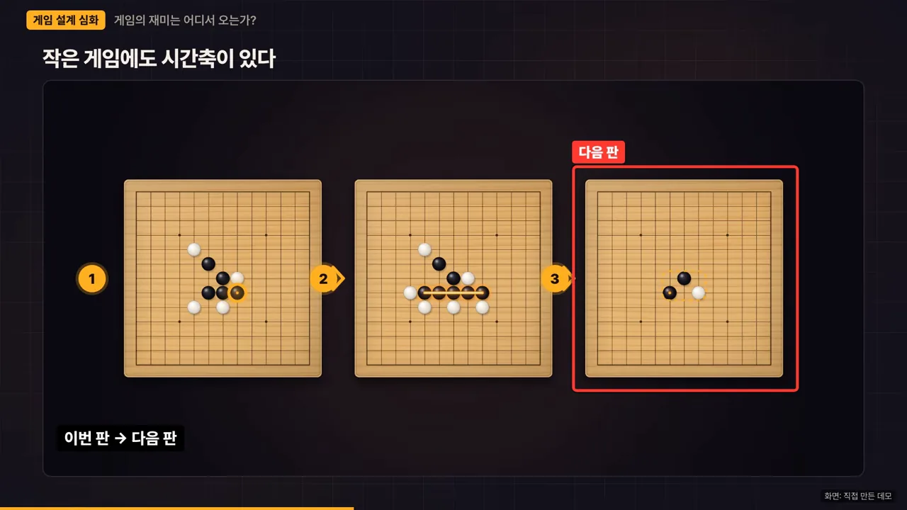
반대로 접속 안 하면 손해 보는 숙제를 붙였다고 성장과 관계가 생기진 않아요. 출석 도장은 찍히는데 마음은 안 찍히는 경우도 많아요. 플레이어가 돌아온 이유가 기대인지, 의무감인지, 친구와의 약속인지 따로 봐야 해요.
짧은 영상과 도파민, 무엇을 비교할까요?
짧은 영상은 엄지 한 번이면 다음 이야기를 만나요. 게임을 켜고 규칙을 배우는 것보다 들어오는 비용이 훨씬 낮아요. 그렇다고 짧은 영상이 다 얕다는 말은 아니에요. 웃고, 배우고, 친구한테 보내고, 직접 찍어 올리기도 하니까요.
유튜브는 도움말에서 쇼츠 피드를 사람마다 다르게 고른다고 설명해요. 아래 화면은 그 도움말 페이지로, 시청 기록, 검색 기록, 구독, 좋아요, 싫어요 같은 신호 목록 맨 아래 'Satisfaction surveys(만족도 설문)'에 빨간 상자가 쳐져 있어요. 틱톡도 공식 블로그에서 상호작용과 영상 정보를 이야기해요. 다만 이건 회사가 직접 한 설명이고, 발표자가 알고리즘을 열어 본 건 아니에요.
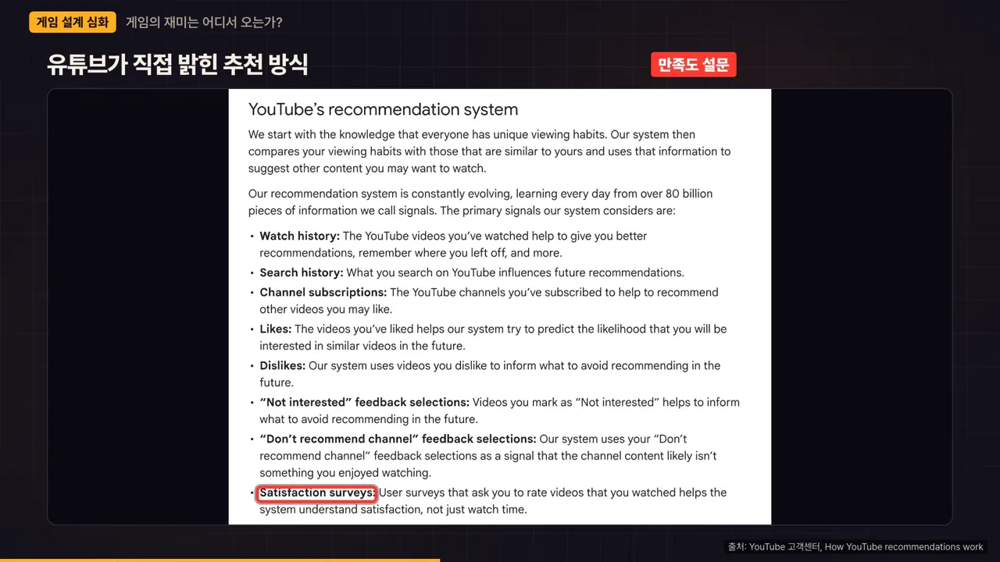
넘기기와 돌 놓기
여기서 비교할 건 좋고 나쁨이 아니라 입력과 결과의 연결이에요. 아래 표 첫 줄에서 입력은 둘 다 한 번이에요. 짧은 영상은 넘기기, 오목은 돌 놓기죠. 그런데 둘째 줄에서 바뀌는 것이 갈려요. 영상을 넘기면 보는 대상이 바뀌고, 돌을 놓으면 판의 상태가 바뀌어요. 셋째 줄 다음 순간에는 새 영상이 오거나, 상대가 대응해요.
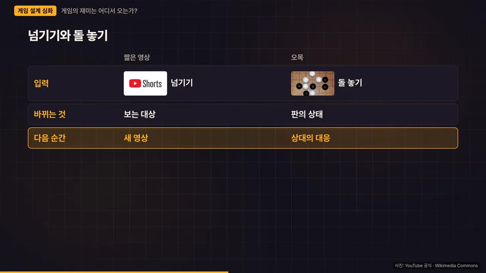
그래서 게임이 입력의 가벼움만으로 짧은 영상과 겨루면 자기 장점을 지우게 돼요. 클릭 한 번 뒤에 '내 판단 때문에 뭔가 달라졌다'는 느낌을 줄 수 있는지 물어봐야 해요. 대신 로딩, 긴 설명, 의미 없는 대기를 줄이는 건 짧은 영상한테 배울 만해요. 튜토리얼이 열두 장이면 플레이어 엄지는 이미 다른 데 가 있어요.
'도파민을 채운다'는 말이 빠뜨리는 것
흔히 짧은 영상으로 도파민을 채운다고 말해요. 일상 비유로는 통하지만, 설계 근거로 쓰기엔 한 단어에 너무 많은 걸 넣어요. 슐츠(Schultz) 연구팀의 그림은 원숭이 도파민 뉴런을 기록한 결과예요. 세 줄이 세 상황이에요. 맨 위는 예상 못 한 보상이 와서 R(보상) 자리에서 반응이 튀어요. 가운데는 보상을 알리는 신호(CS(Conditioned Stimulus))를 배운 뒤라 반응이 CS 쪽으로 옮겨 갔어요. 맨 아래는 신호는 왔는데 보상이 안 와서, 빨간 상자 자리의 반응이 푹 꺼져요.
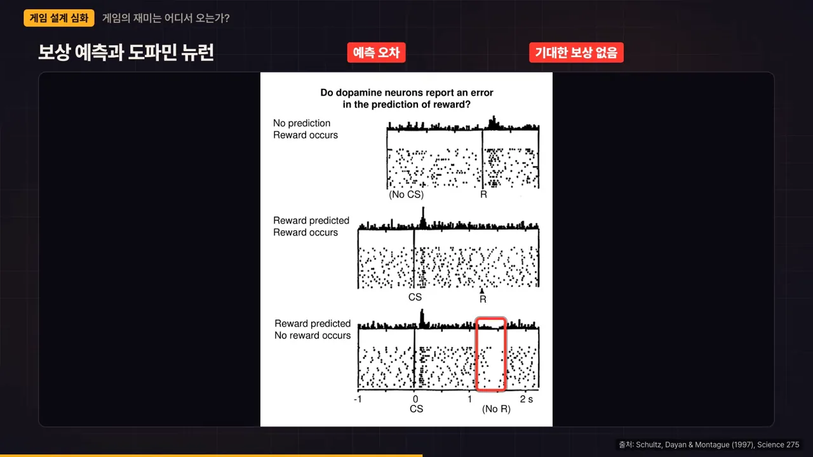
베리지와 로빈슨은 원하는 것과 좋아하는 것을 나눠서 봐요. 아래 그림 오른쪽 그래프에서 시간이 갈수록 'Wanting(원함)' 선은 위로 올라가고, 'Liking(좋아함)' 선은 그대로이거나 내려가요. 무언가를 자꾸 찾게 만드는 마음과 그걸 실제로 즐기는 반응이 늘 같이 움직이진 않는다는 거예요.
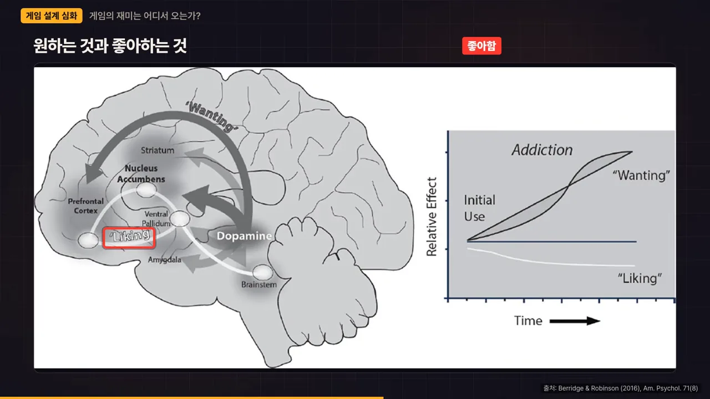
따로 물어야 하는 세 가지
개발자가 당장 할 수 있는 건 질문을 쪼개는 거예요. 아래 표는 질문마다 가까운 개념과 묻는 때를 짝지었어요. "하는 동안 즐거웠나요?"는 좋아함으로 플레이 중에, "한 판 더 하고 싶나요?"는 원함으로 끝난 직후에, "끝나고 만족하나요?"는 만족으로 다음 날 물어요.
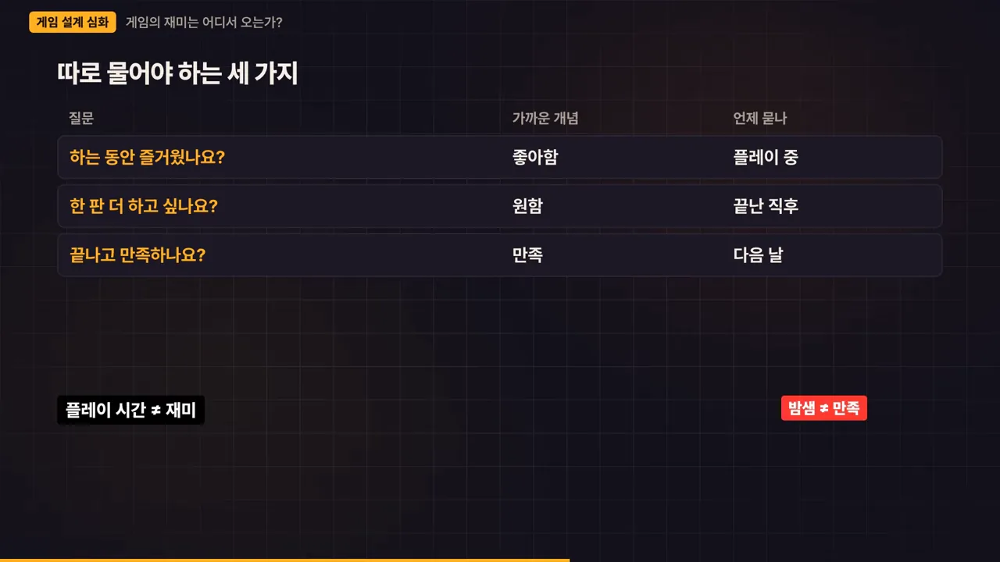
AI에게 천 번 물어본 실험과 힌트 가설
이제 실험 이야기예요. AI에게 보낸 말은 매번 똑같이 "간단하게 오목을 재미있게 만들어봐"였어요. 1,000번 모두 처음부터 따로 물었고, 앞 답을 이어서 고친 건 없어요. 아래 화면의 user 칸이 그 요청이고, 그 아래 system 칸이 뒤에서 정해 준 조건이에요. 빨간 상자 안에 규칙 다섯 개와 고를 수 있는 값이 있어요.
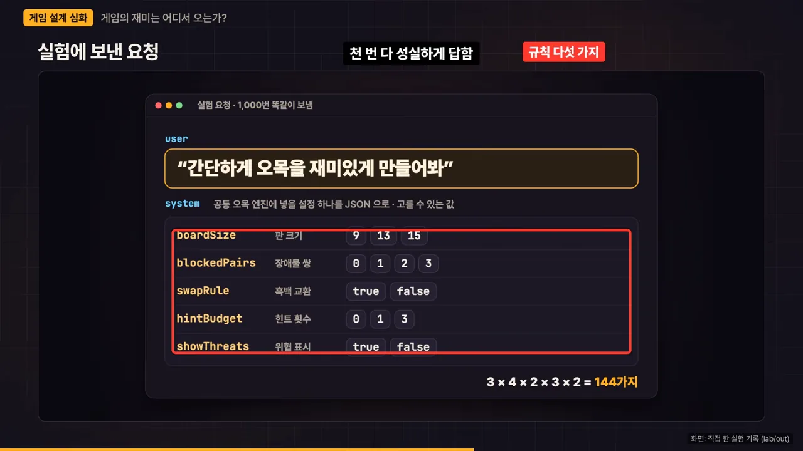
화면의 영어 이름을 우리말로 옮기면 이래요.
| 규칙 | 화면 속 이름 | 고를 수 있는 값 | 가짓수 |
|---|---|---|---|
| 판 크기 | boardSize | 9 · 13 · 15 | 3 |
| 장애물 | blockedPairs | 0 · 1 · 2 · 3쌍 | 4 |
| 첫 수 뒤 흑백 교환 | swapRule | 켬 · 끔 | 2 |
| 힌트 횟수 | hintBudget | 0 · 1 · 3회 | 3 |
| 위협 표시 | showThreats | 켬 · 끔 | 2 |
공통 오목 엔진 위에서 이 다섯 값만 고르게 했으니, AI가 게임 코드를 1,000개 짠 실험은 아니에요. 범위를 좁혀서 실제로 돌려 보고 비교할 수 있게 만든 실험이에요. 같은 말을 1,000번 하면 사람은 화를 내지만 AI는 1,000번 다 성실하게 답했어요.
1,000번이 54가지로 줄었어요
응답은 1,000개가 다 왔고, 규칙 검사를 통과한 건 999개였어요. 이름이 달라도 다섯 규칙 값이 같으면 같은 게임이라 묶었더니, 서로 다른 규칙은 54가지였어요. 아래 그림은 영상이 밝힌 숫자를 한 눈금으로 그린 거예요. 마지막 줄 사람 평가는 0명이에요.
가장 많이 나온 규칙 하나만 봐도 그래요. 아래 화면 위쪽 꼬리표가 그 규칙이에요. 13×13 판, 장애물 0쌍, 교환 있음, 힌트 1회, 위협 표시 켜짐. 이 규칙은 144번 나왔는데 붙은 이름은 '시야 확장 오목', '유연한 오목', '빠른 오목' 등 82가지였어요.
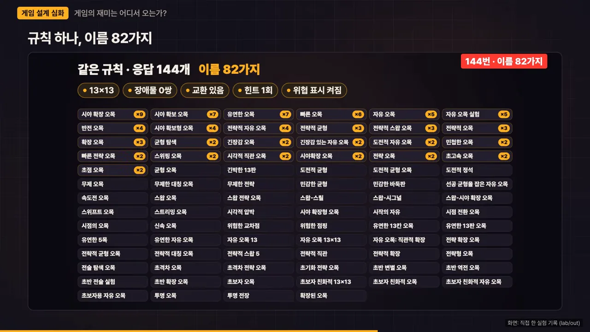
많이 나온 규칙 다섯 개를 막대로 세우면 144, 125, 108, 97, 62번이에요. 화면 위쪽 설명대로 유효 응답 999개 중 상위 다섯 개가 53.7%로 절반이 넘어요. 맨 오른쪽 회색 막대가 나머지 49가지를 합친 463번이에요. AI도 꽂히는 메뉴가 있었던 거죠.
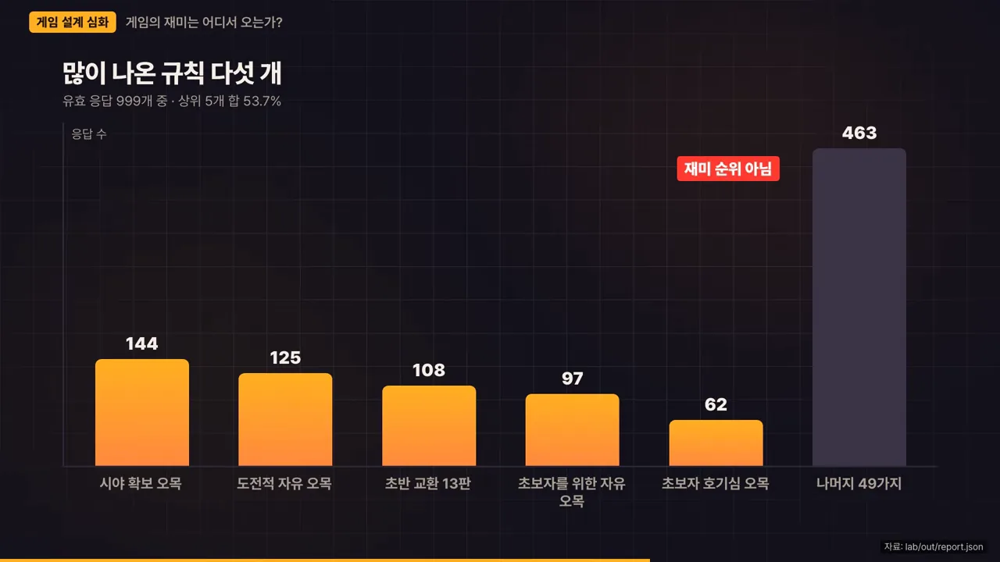
규칙별로 켠 비율을 보면 쏠림이 더 보여요. 흑백 교환은 91.8%로 열에 아홉 번 넘게 켰고, 힌트 있음은 52.9%, 위협 표시는 47.1%, 장애물은 9.9%로 열에 한 번꼴이었어요.
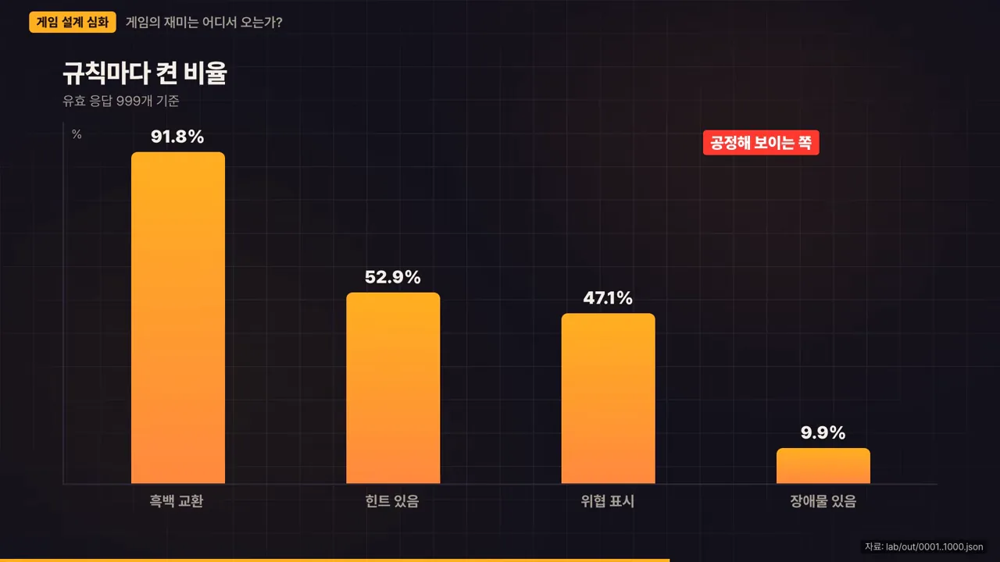
그다음엔 작동을 확인했어요. 아래 표 첫 줄 엔진 테스트 11개로 고장 여부를, 둘째 줄 자동 대국 216판(규칙 54가지 × 4판)으로 끝까지 진행되는지를 봤어요. 판 밖에 둘 수 있는지, 이긴 뒤에 입력이 막히는지 같은 걸 보는 검사예요. 셋째 줄 비용은 보고된 값으로 0.0208달러, 약 2센트였어요.
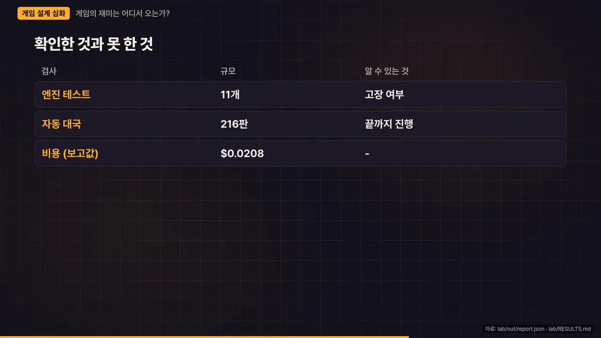
힌트 하나만 바꾸는 실험 계획
그래서 가설을 하나 세워요.
오목을 처음 배우는 사람에게 한 번 요청할 수 있는 힌트를 주면, 위협을 이해하는 데 도움이 되면서도 내가 골랐다는 느낌은 남을 것이다.
— 영상 10:51
이번엔 다른 건 하나도 안 바꿔요. 아래 화면 왼쪽 A 기본과 오른쪽 B는 같은 판, 같은 수순이고, B에만 힌트 버튼이 하나 붙어 있어요. 아래에 '바꾼 변수: 힌트 1회'라고 적혀 있어요.
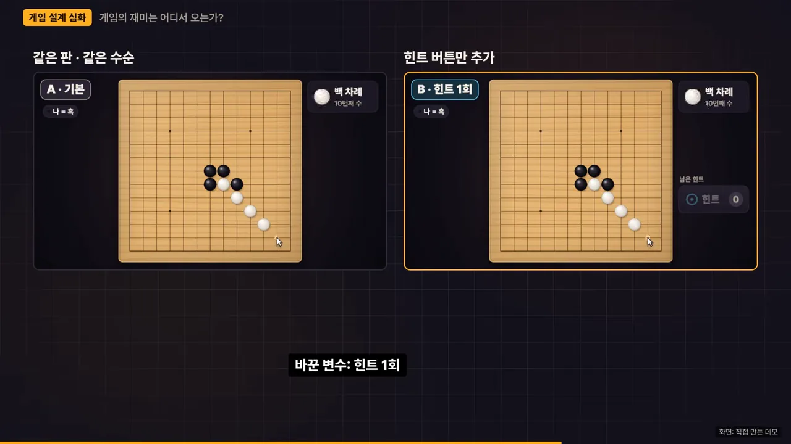
기본판 다음에 힌트판만 하면 두 번째 판엔 연습 효과가 섞여요. 두 번째 판을 잘한 게 힌트 덕인지 그냥 손이 풀린 건지 모르니까요. 그래서 아래 표처럼 사람마다 순서를 바꾸고 흑백도 바꿔요. 참가자 1은 A 다음 B를 흑으로, 2는 B 다음 A를 흑으로, 3과 4는 같은 순서를 백으로 둬요.
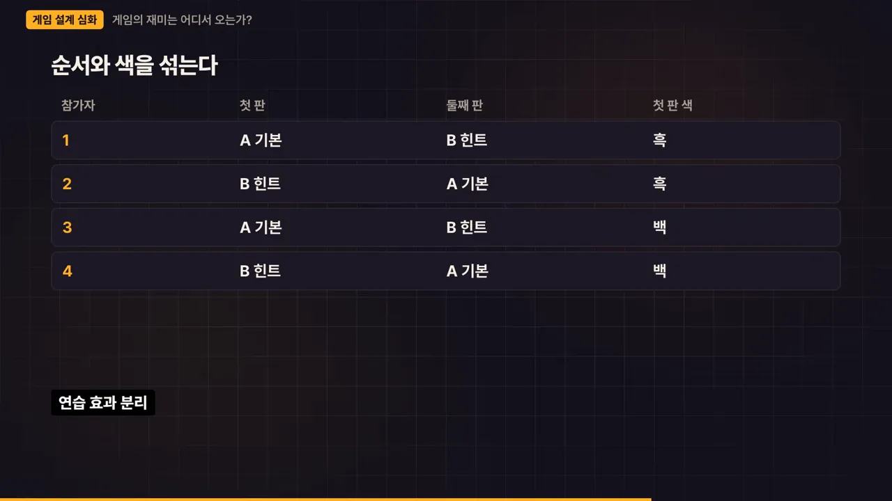
관찰할 것도 미리 정해요. 아래 표 오른쪽 열이 '가설이 틀린 신호'예요. 힌트를 쓴 뒤 왜 거기인지 물었을 때 설명을 못 하면, 다음에 비슷한 위협이 왔을 때 또 놓치면, 빼앗긴 느낌을 1~7점으로 물었을 때 답만 따라 뒀다고 하면 가설이 틀린 거예요. 즐거움은 1~7점과 한 줄 소감으로 따로 받아요.
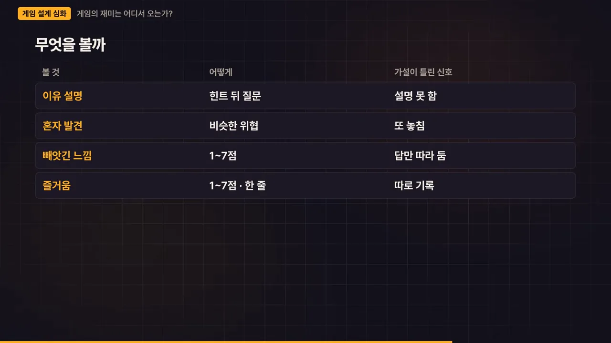
데모에는 판이 끝날 때마다 이걸 적는 칸을 넣어 뒀어요. 아래 화면에서 즐거움 1~7 버튼 아래 빨간 상자가 '내 선택이 결과에 영향을 줬나?' 칸이에요. 위쪽 꼬리표에는 '참가자 0명'이라고 적혀 있어요.
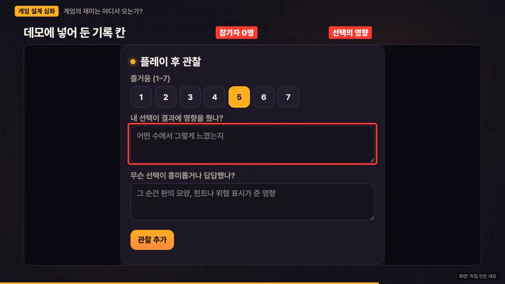
내 아이디어를 30초 루프로
이제 각자의 아이디어로 가 봐요. 어두운 미로에서 살아남는 게임이 떠올랐다고 해 볼게요. 처음부터 아이템 100개, 보스 10마리를 그리면 기획서보다 소원 목록에 가까워요. 대신 플레이어가 느꼈으면 하는 걸 먼저 적어요. 아래 그림의 1번 '더 깊이'로 들어가고 싶은 욕심, 3번 '돌아갈 곳'으로 가야 한다는 불안이에요. 오른쪽 위 꼬리표에는 '먼저 적을 것: 느낌'이라고 쓰여 있어요.
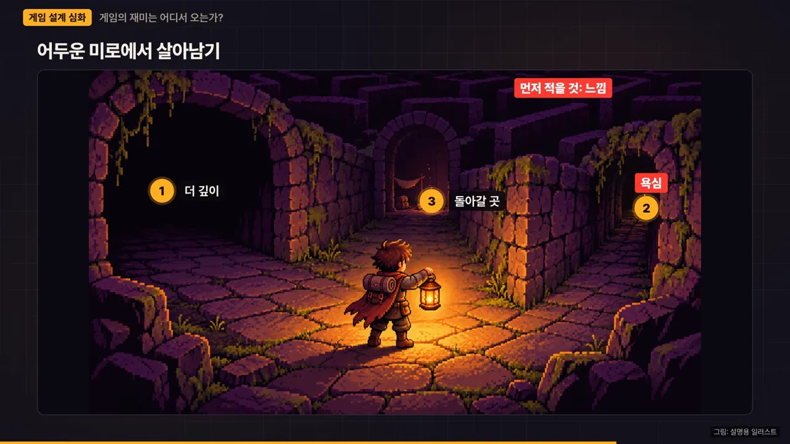
발표자는 이걸 30초 루프로 만들어 봤어요. 등불을 밝게 켜면 길이 잘 보이는 대신 연료가 빨리 닳아요. 어둡게 가면 연료는 아끼지만 갈림길을 놓칠 수 있어요. 더 들어갈지, 지금 들고 돌아갈지도 매번 정해요.
밝기 하나만 바꿔 보면
같은 지도, 같은 출발점에서 밝기 하나만 바꾼 결과예요. 왼쪽 '밝게'는 연료가 56% 남았고 방 전체가 보여요. 오른쪽 '어둡게'는 연료가 82%나 남았지만 주변이 거의 안 보여요. 아래에 '갈림길 보물 놓침', '연료 많이 남음'이라고 적혀 있어요.
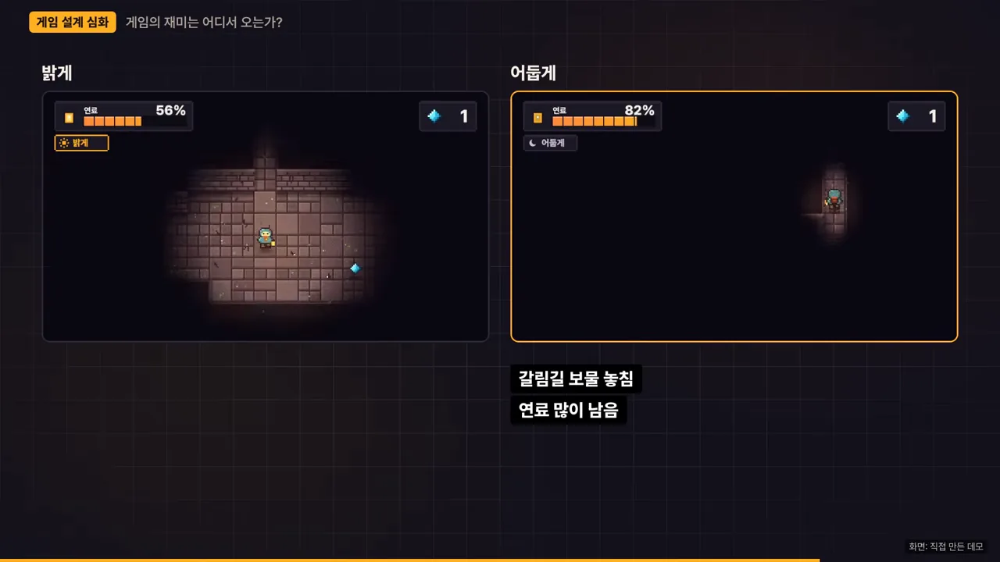
여기서 중요한 건 손해가 있느냐보다, 뭘 얻고 뭘 잃는지 읽을 수 있느냐예요. 아래 화면 왼쪽 '예고 없음'은 연료가 언제 떨어질지 모르고 벽이 갑자기 막히는 판이라 '억울함'이 남아요. 오른쪽 '미리 보임'은 연료 게이지(33%)가 보이고 벽에 금이 먼저 가는 판이라, 같은 실패라도 '내 판단의 결과'가 돼요.
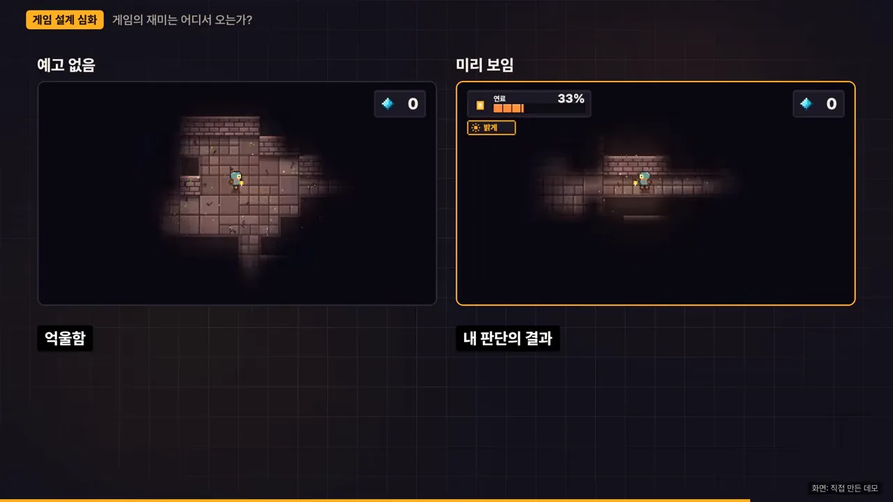
돌아온 뒤에는 왜 잘됐는지, 왜 망했는지 단서가 남아야 해요. 아래 야영지 귀환 화면은 보물 2개, 연료 12%와 함께 '밝게 켠 시간 14초'를 보여 줘요. 이런 숫자가 남아야 다음 판에 다르게 해 보고 싶어져요.
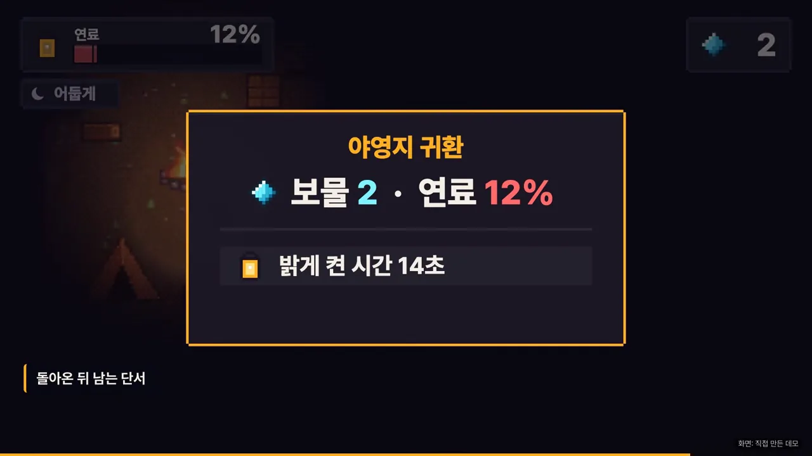
다섯 칸으로 점검하기
정리하면 발표자는 다섯 칸을 채워 봐요. 원하는 경험, 그걸 만드는 선택, 선택에 대한 반응, 결과를 다시 읽을 단서, 그리고 다음 선택이에요. 아래 그림은 다섯 칸에 미로 게임의 값을 넣고, 다음 선택이 다시 첫 칸으로 이어지게 그린 거예요. 값은 영상 14:40의 설계 카드에서 가져왔어요.
영상의 미로 화면에서도 다섯 칸을 번호로 짚어요. 바로 앞 화면들에서 차례로 꼬리표가 붙었는데, 1번 인물에는 '경험', 2번 어두운 길목에는 '선택', 4번 앞쪽 통로에는 '단서'가 붙었어요. 아래 화면에서는 3번이 왼쪽 위 연료 게이지(반응), 빨간 상자의 5번이 야영지 모닥불(다음 선택)이에요. 위쪽 꼬리표는 '공식 아님 · 점검표'예요.
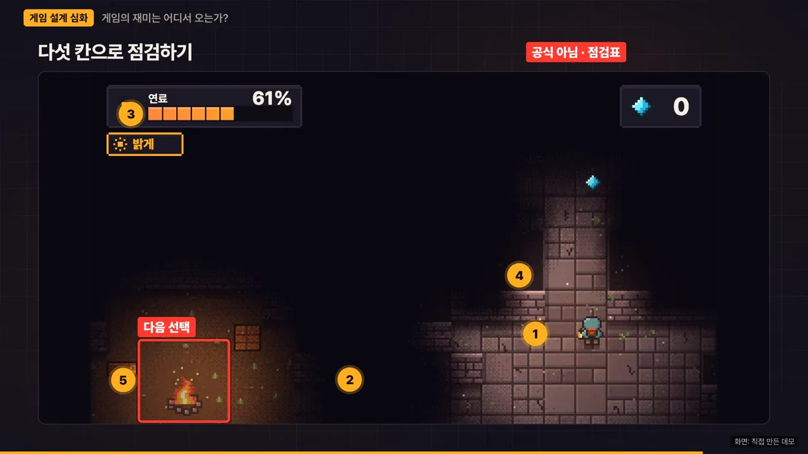
물론 모든 게임에 위험과 손실이 필요한 건 아니에요. 편하게 방을 꾸미는 게임이라면 배치하고, 바라보고, 고치고, 친구에게 보여 주는 흐름을 보면 돼요. 아래 그림에 1~4번이 그 흐름이고, '보여 주기'와 '고치기'에 꼬리표가 붙어 있어요. 오른쪽 아래의 '연료 게이지?'는 여기에 미로 게임의 장치를 붙이면 어떻게 될지 묻는 표시예요.
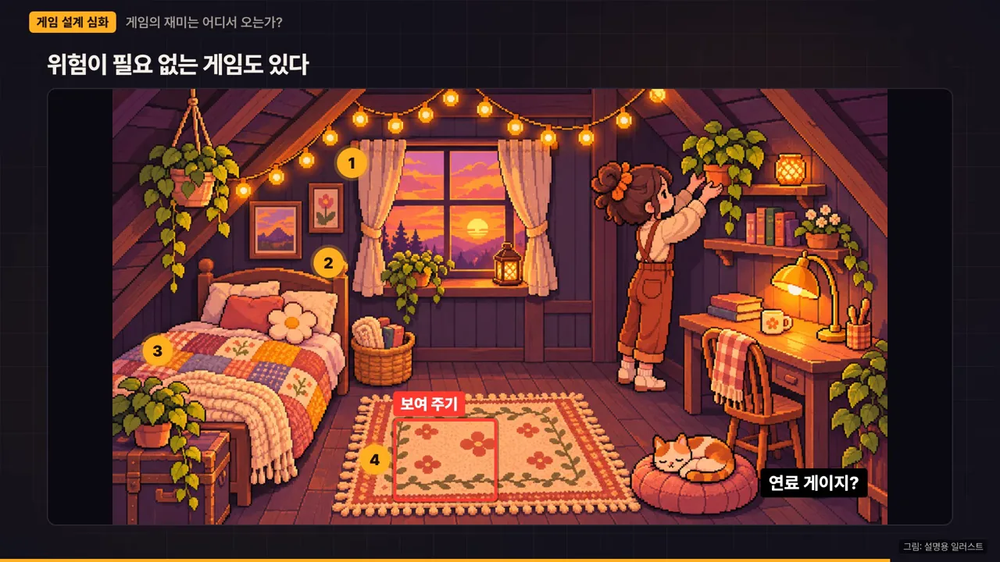
AI에게 다시 부탁하기
처음 문장은 "간단하게 오목을 재미있게 만들어봐"였어요. 이제는 이렇게 바꿔 보낼 수 있어요. 아래 화면 왼쪽 상자가 바꾼 요청 전문이에요. 오른쪽에는 '재미있다는 말 대신 확인할 기준을 받습니다'라는 이유와, 요청에 꼭 들어갈 세 가지 '대상·시간', '변수 하나', '틀린 신호'가 있어요.
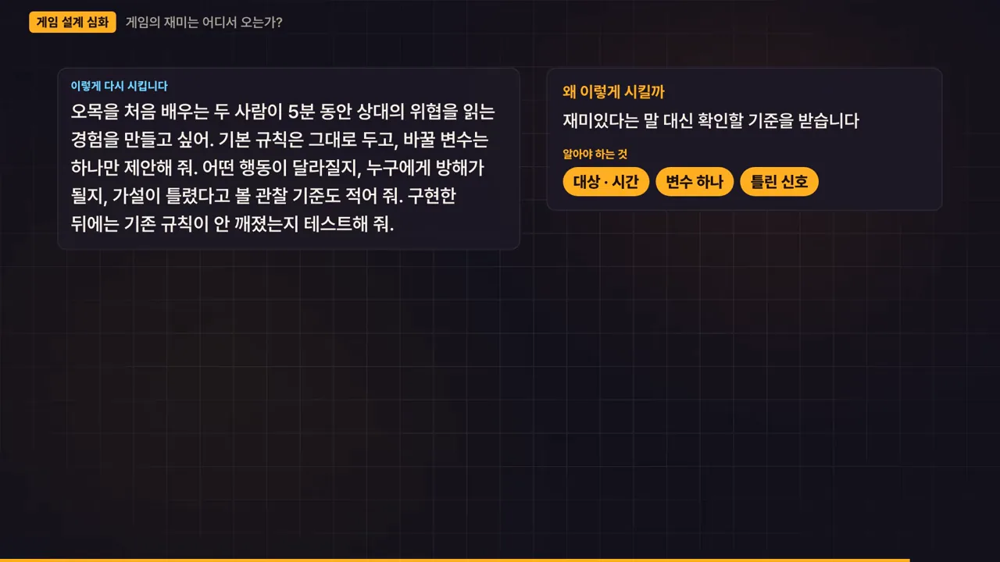
이 요청은 AI가 더 자신 있게 "재미있다"고 말하게 만드는 요청이 아니에요. 뭘 만들었고 뭘 아직 모르는지 또렷하게 만드는 요청이에요.
"재미없대요"를 나눠 적기
실패한 결과도 남겨 둬요. 아래 표는 '재미없대요'를 원인별로 나눈 거예요. 할 게 없어 멈추면 기능 부족이라 하나만 추가해요. 결과를 설명 못 하면 피드백이 안 보이는 거라 표시를 바꿔요. 규칙부터 막히면 대상이 다른 거라 다른 사람에게 해 봐요. 아래 꼬리표처럼 한 번에 하나씩이에요.
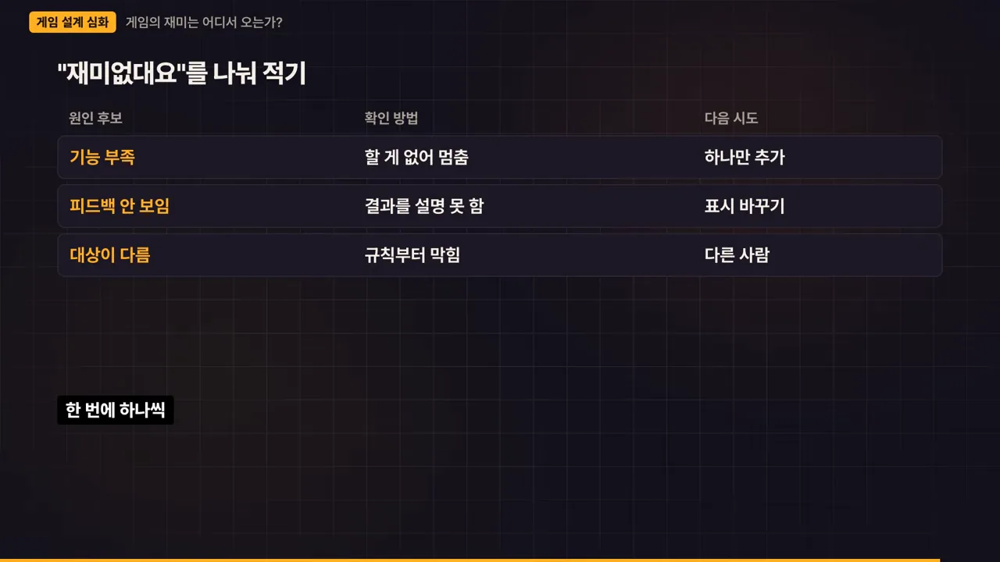
오늘 해 볼 것: 설계 카드 한 장
마지막으로 발표자는 설계 카드 한 장을 내밀어요. 왼쪽 열이 채울 칸, 오른쪽이 미로 게임으로 채운 예시예요. 대상과 원하는 경험은 '탐험 초보 · 욕심과 불안', 30초 안에 하는 선택은 '등불 밝기 · 더 갈까 돌아갈까', 바꾸는 변수는 '등불 밝기 하나', 가설이 틀렸다고 볼 관찰은 '늘 밝게만 켬 · 이유 설명 못 함'이에요. 맨 아래 '유지 / 수정 / 폐기와 이유' 칸은 해 보고 나서 채우도록 비어 있어요.
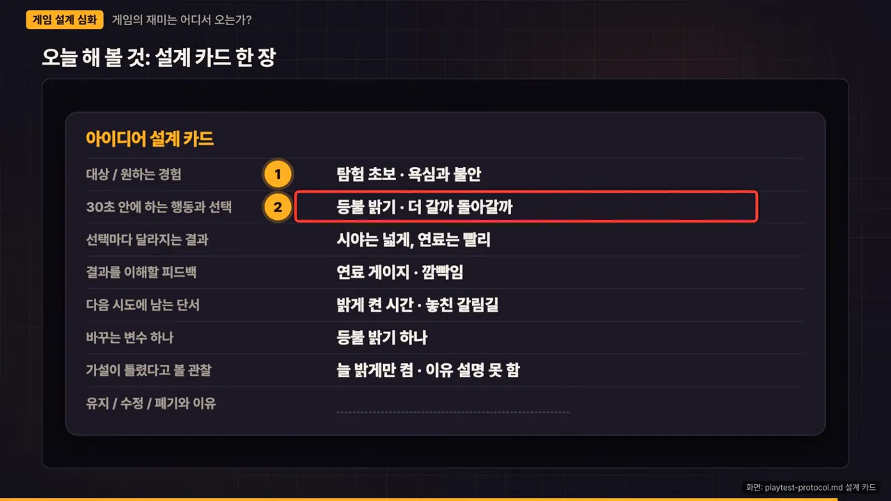
해 볼 일은 간단해요. 아이디어에서 제일 중요한 경험 하나를 적고, 1분 안에 그 경험을 느낄 수 있는 장면 하나만 만들어요. 친구 한 명에게 해 보게 하고 어디서 멈추는지, 뭘 기대하는지, 결과를 어떻게 설명하는지 지켜봐요. 한 사람 말이 전부는 아니지만, 큰 오해와 고장은 대개 거기서 먼저 걸려요.
아래 표가 오늘 실험이 말해 주는 전부예요. AI 응답 1,000개는 후보, 서로 다른 규칙 54가지는 실제 다양성, 사람 평가 0명은 아직 모른다는 뜻이에요.
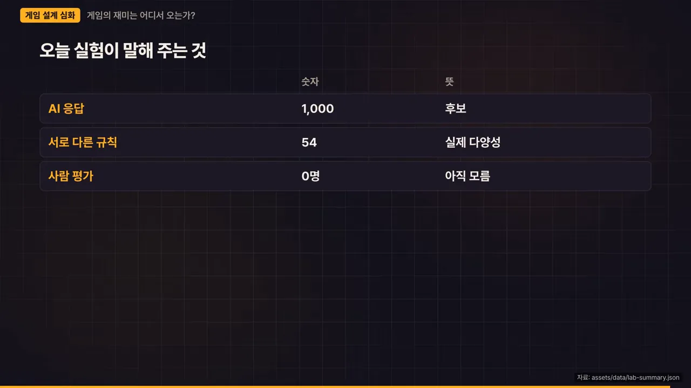
AI한테 풀옵션 오목을 받아도, 재미있냐는 질문엔 친구 한 명이 더 빨리 답해 줍니다.
— 영상 14:57